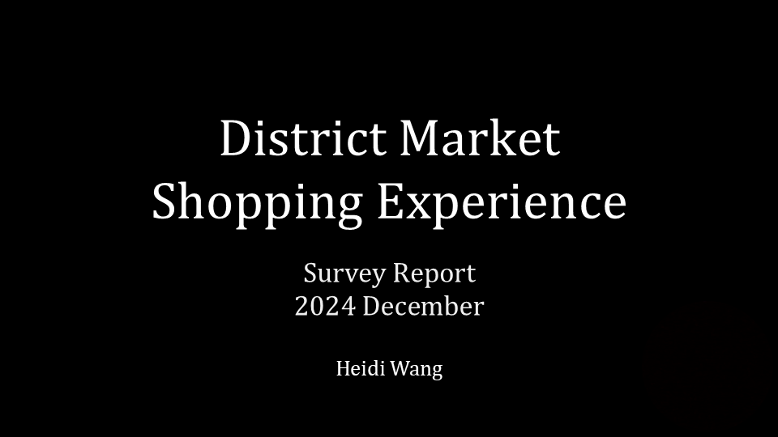

UW District Market
User research project including field, survey, and interview user research
Field Study
The District Market (DM) offers many different types of foods and products for different purposes. People can go there to buy groceries (mostly on west campus), prepared meals, including hot, fresh, and frozen, home cleaning products, snacks, and other household-use products. This wide variety of items may be able to be better optimized to match customers’ needs. Especially during peak hours, such as lunch, long lines often form at the register and extend through the store, partially obstructing walkways for other patrons. Workers are often stocking shelves with carts of boxes that can also obstruct access. As one of the places where students can spend dining money, the DM is a central location on campus and addressing user pain points is impactful.
View the full field study plan (pdf)
Results
The three findings from the field research were:
- Fresh food is the most popular category of items at the DM.
- The layout of the fresh food sections have aspects that negatively impact customers’ experiences.
- The DM provides shopping baskets and carts to its customers, but customers do not use them, even when they may find them useful.
Many of the field notes were centered around food. Given that many customers of the DM would be students living on campus who are seeking to spend their dining money, this makes sense within the context.
Reflection
Conducting this field research study was an opportunity to practice concurrent observation and note taking skills, as well as prioritization.
View the full field study report (pdf)
Interview
Many of the observations from the field research were centered around food. Given that many customers of the DM would be students living on campus who are seeking to spend their dining money, this makes sense within the context. The field research also indicated a greater importance of the hot bar than expected.
The results of the field research suggest that the topic of fresh food from the DM, in a variety of capacities, is worth further exploration in a more focused scope through interview research. This motivates a refined design question for interview research: How can the experience of getting food at the District Market be improved for students?
View the full interview plan (pdf)
Results
The three findings from interview research were:
- Participants indicated dissatisfaction with the amenities provided for meals from the DM, including the range of options, freedom of choice, flavor, and heating their food.
- Participants indicated experiencing inconvenience with the layout of the hot food bar, including the double-layered bar on north campus, worker service on west campus, and prompting for utensils.
- Participants indicated experiencing inefficiency with the store layout with respect to the meal sections, including space to form lines and walk around the area reserved for the food bar, as well as traffic across different parts of the store.
The interviews yielded new information about different aspects of the DM that were not able to be discovered from field observation, such as sauces and microwaves. It provided more input on the theories generated from field observation that at times supported or dissuaded those recommendations, adding nuance. Some participants provided more information that was relevant than others. Individual perspectives seemed to impact opinions to a significant degree, potentially obscuring larger trends.
Reflection
Having the opportunity to test run the interview questions was exceptionally beneficial and elucidated a more clear direction and flow for questioning. Conducting the interviews was an iterative process. Each interview informed additional questions that could have been important to ask intentionally, and that was accordingly done in the next interview.
View the full interview report (pdf)
Survey
Findings from field and interview research emphasized the relative popularity of fresh and hot meals among DM store items, and also the ways in which the current layout and provisions of those sections were inefficient or inconvenient. Therefore, we plan to conduct survey research to address the question of How can the experience of getting meals at the District Market be improved for students? This question is similar to that used for interview research, with the amendment of replacing “food” with “meals”, a wording that better reflects the area of focus. The wording of “students” is maintained, as it accurately reflects the demographic of participants that the survey will reach.
View the full survey plan (pdf)
Results
The three findings from survey research were:
- Participants want a greater variety of options, but do enjoy the limited options provided.
- Participants like customizing their eating experience by flavoring and heating their food.
- Participants prefer to use a self-serve hot food bar.
The only type of item that had a frequency for use that was noticeably skewed was Snacks (eg chips, granola bar, etc) to the right (positive skew), indicating that snacks are the most popular type of food items at the DM, and other food item types were less popular and generally more similarly popular to each other.
Findings on hot bar bin placement and prompting for utensils were inconclusive.
The survey data yielded new information that clarified recommendations from field and interview research. In contrast to interview research, survey research provided quantitative data that is more likely to be less impacted by individual perspectives, revealing larger trends.
Future Work
While survey research indicated that customers may enjoy having options to customize their food, there may still be factors that would prevent them from using such options even if they were provided to them. For example, being in a rush or not being willing to use contaminated condiment bottles or microwaves could be limiting factors. Therefore, further research can be conducted to learn more about how participants might interact with these proposed provisions.
The relatively small amount of data that was collected meant that it would be difficult for analysis across questions to yield significant trend results. Further research could collect more data from a wider and also potentially more representative sample, as well as data from different time points throughout the school year, which could offer interesting insight.
Reflection
Conducting survey research shares the skills of refining question phrasing and sequencing from interview research, but also involves data visualization and interpretation in a quantitative way that is different from the data that interview research yields. Participant commentary on question and answer choice formulation was informational beyond addressing the design question, and instead aiding improvement of survey research skills towards future work.
View the full survey report (pdf)
View the survey report presentation (pdf)